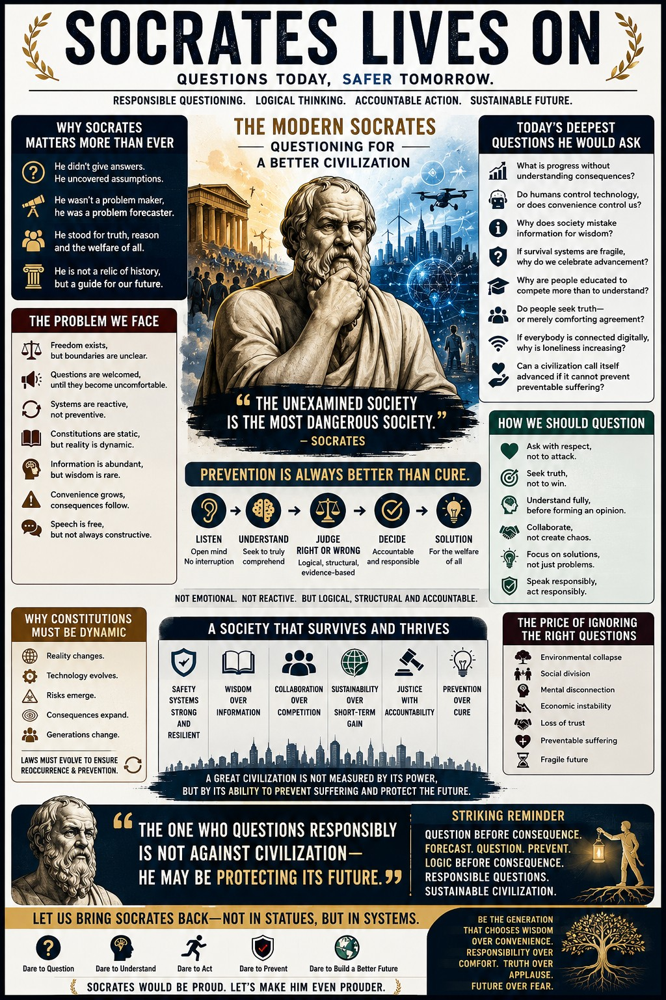

“The one who questions responsibly is not against civilization — he may be protecting its future.”
The Return of Socrates
Socrates was not merely asking abstract questions; he was a civilization-level early warning system. Just as engineers stress-test aircraft before failure, the Socratic method stress-tests human thinking before consequences emerge. WE believe that in a high-speed world, logic must arrive before consequences.
The Pattern of Progress
| The Reactive Cycle | The Preventive Goal |
|---|---|
| Advancement → Blind Adoption . | Forecast → Question → Prevent. |
| Delayed Consequences → Public Realization. | Logic arrives before damage. |
| Corrective systems after the cure. | Prevention as a built-in standard. |
Questions for Survivability
WE must face these "Modern Socratic" challenges to ensure our progress is sustainable:
- Do humans control technology, or does convenience control humans?
- Why does society mistake information for wisdom?
- Can civilization call itself advanced if preventable suffering still exists?
- Are we becoming more powerful while forgetting how to become wiser?
The Socratic Process
A healthier civilization replaces reaction with reasoning :
- Listen & Understand: Filter through logic, not emotion.
- Judge & Decide: Based on truth-seeking, not agreement.
- Solution: Accountable outcomes for future protection.
Dynamic Governance
Laws should not sleep as dusty symbols; they must actively protect :
- Adaptive Systems: Governance that evolves as fast as technology.
- Survivability Audits: Continuous testing of system resilience.
- Stable Principles: Foundations that do not shift with trends.